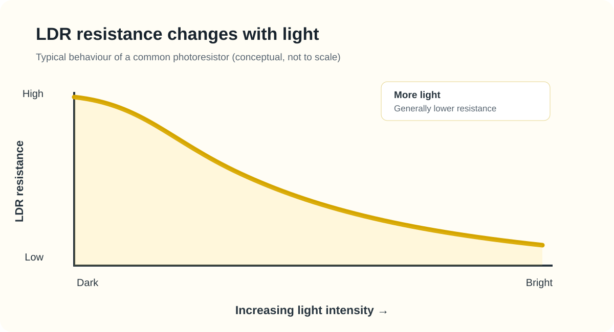
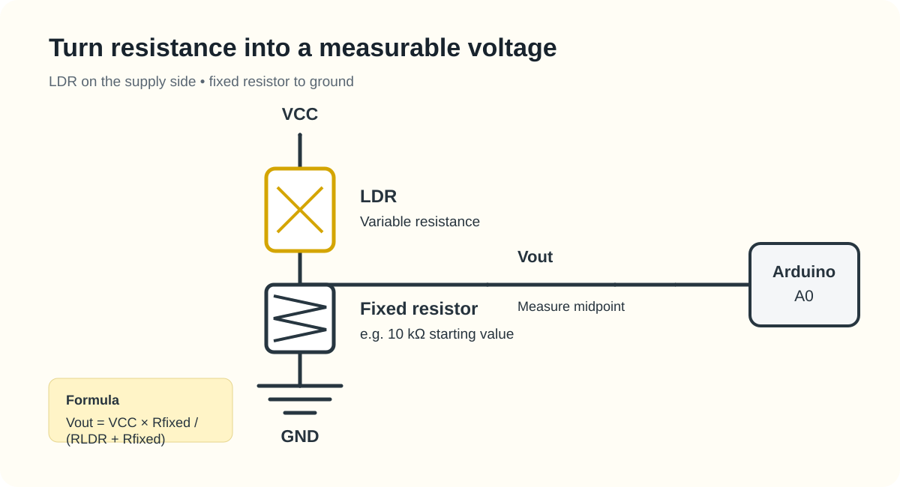
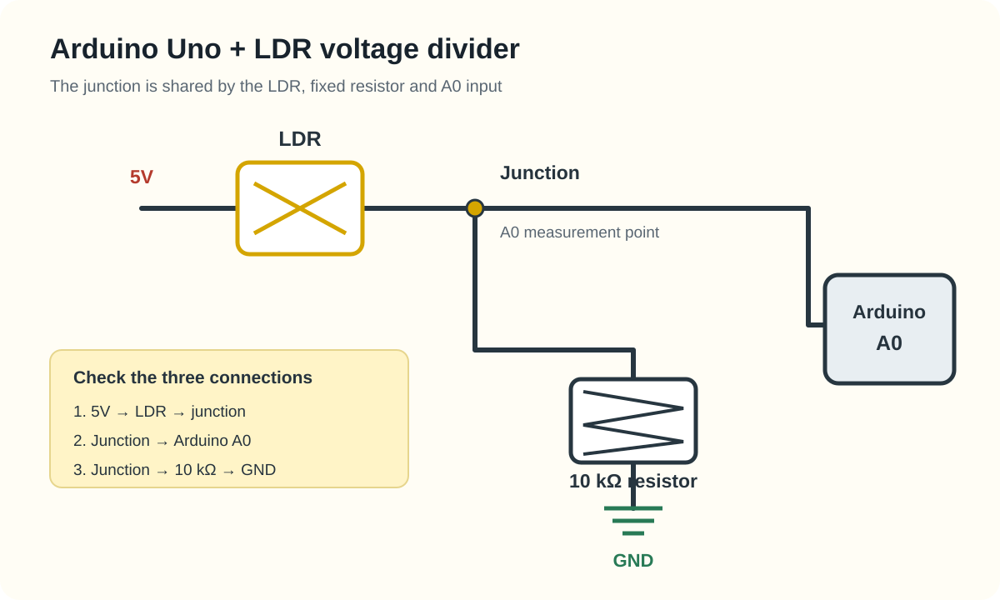

LDR Voltage Divider Circuit: Arduino Wiring, Readings and Calibration
An automatic night lamp, a light-sensitive alarm and a simple brightness detector all need a way to respond to changing light. One low-cost component used in these circuits is the light-dependent resistor, usually called an LDR or photoresistor.
An LDR does not measure light as a ready-made digital value. Its resistance changes with the light falling on its surface. A suitable circuit converts that resistance change into a voltage that a microcontroller can read.

If you need a beginner-friendly overview of the component's definition, construction and uses, read Vayuyaan's LDR sensor working principle. This article goes further into the circuit behaviour and Arduino measurements.
What is an LDR?
An LDR is a passive electronic component whose resistance depends on incident light. Many common photoresistors use a photosensitive semiconductor material. When light reaches the material, it changes the number of available charge carriers, allowing current to flow more easily through the component.
As a result, the resistance of a typical LDR falls as illumination increases. In darkness, its resistance rises. This behaviour is called photoconductivity.
The LDR itself has no polarity in the way an LED does, so either lead can be placed on either side of a simple voltage-divider circuit. However, the position of the LDR relative to the fixed resistor determines whether the Arduino reading rises or falls as the light gets brighter.
How light changes LDR resistance
Think of resistance as opposition to current. In low light, a typical LDR offers high resistance. In brighter light, its resistance becomes lower. The change is not usually linear, so doubling the light does not necessarily halve the resistance.
| Lighting condition | Typical LDR response | What it means for a circuit |
|---|---|---|
| Dark or very dim | High resistance | Current through the divider is relatively low. |
| Indoor lighting | Lower resistance than in darkness | The divider output shifts as the room gets brighter. |
| Bright light | Generally lower resistance | The divider output shifts further, depending on resistor placement. |
These are relative behaviours, not resistance specifications. Actual values depend on the LDR model, light spectrum, illumination, temperature, age and measurement method. Check the datasheet for the part you have.
Why an LDR needs a voltage divider
An Arduino analog input measures voltage, not resistance directly. To read an LDR, connect it in series with a fixed resistor between the supply and ground. The junction between the two components becomes the measurement point.

For the arrangement shown, with the LDR connected to the supply and the fixed resistor connected to ground, the output voltage is:
Vout = VCC × Rfixed ÷ (RLDR + Rfixed)
Here, VCC is the supply voltage, Rfixed is the fixed resistor value and RLDR is the LDR resistance. As the light increases, RLDR generally decreases, so Vout generally increases in this arrangement.
If you swap the LDR and fixed resistor, the output voltage moves in the opposite direction. Both arrangements can work. Choose one, document it and calibrate the code to match the actual wiring.
How to choose the fixed resistor
The fixed resistor affects the voltage range and sensitivity of the divider. A 10 kΩ resistor is a common starting point for simple experiments, but it is not the correct value for every LDR or lighting condition.
- Check the LDR datasheet for its resistance under specified illumination and its dark resistance.
- Choose a fixed resistor in a similar range to the LDR resistance around the light level you want to detect.
- Measure the output in the real environment rather than selecting a threshold from an example online.
- Use a resistor with a suitable power rating and keep the divider current within safe limits.
For a simple day/night switch, you usually need a repeatable threshold rather than a laboratory-grade lux measurement.
Connect an LDR to an Arduino Uno
The following example uses a bare LDR, a 10 kΩ fixed resistor and an Arduino Uno. It is a low-voltage learning circuit. Do not connect mains-powered lamps directly to an Arduino pin. Use a correctly rated driver and suitable electrical protection for any real load.

Components
- Arduino Uno or a compatible 5 V board
- One LDR / photoresistor
- One 10 kΩ resistor as a starting value
- Breadboard and jumper wires
- USB cable for power and uploading the sketch
Wiring steps
- Connect one LDR lead to the Arduino 5 V pin.
- Connect the other LDR lead to a breadboard row used as the measurement junction.
- Connect one end of the 10 kΩ resistor to that same junction.
- Connect the other end of the resistor to Arduino GND.
- Connect the junction to analog input A0.
Before powering the circuit, check that 5 V and GND are not connected directly together. If you use an LDR module rather than a bare photoresistor, follow the module's pin labels and documentation; its onboard circuit may behave differently.
Arduino code to read an LDR
This sketch reads the analog input and prints the raw value to the Serial Monitor. It does not assume that a particular ADC value equals a particular lux level.
const int ldrPin = A0;
void setup() {
Serial.begin(9600);
}
void loop() {
int ldrValue = analogRead(ldrPin);
Serial.print("LDR reading: ");
Serial.println(ldrValue);
delay(250);
}Upload the sketch, open the Serial Monitor at 9600 baud and observe the readings. Cover the LDR, then expose it to brighter light. With the wiring shown above, the reading will generally increase as the light gets brighter. Your results may vary with the board, component and surroundings.
On a standard Arduino Uno using its default 10-bit ADC configuration, analogRead() returns a value from 0 to 1023. These are ADC counts representing the input voltage range; they are not direct resistance or lux readings. See the official Arduino analogRead() reference for details.
Calibrate the LDR for a real project
Do not copy a threshold value without testing your own circuit. LDRs vary, and the light level at a desk can differ greatly from the light level near a window or outdoors.
- Record several readings with the sensor covered or in the darkest expected condition.
- Record readings in the brightest expected condition.
- Repeat the test at the light level where you want the project to switch.
- Choose a threshold between the measured dark and bright ranges.
- Test the circuit over several cycles and adjust the threshold if it switches too early or too late.
If readings fluctuate around the threshold, average a small number of samples or use hysteresis. Hysteresis means using one threshold to switch the output on and a different threshold to switch it off. This reduces rapid toggling when the light level is close to the switching point.
Where are LDRs used?
- Automatic night lights: detect low ambient light and switch a low-voltage light circuit on.
- Display brightness control: provide an input for adjusting display or indicator brightness.
- Light-sensitive alarms: detect a change when a beam is interrupted, where the LDR's response speed is suitable.
- Basic robotics: help a small robot respond to light direction or changing illumination.
- Classroom experiments: demonstrate resistance, voltage dividers and analog-to-digital conversion.
For a complete build, follow the Arduino LDR automatic street-light project. It covers the circuit, parts, code and threshold calibration for a low-voltage demonstration.
LDR limitations to understand
An LDR is inexpensive and easy to use, but it is not the best choice for every light-measurement task.
- Slow response: many LDRs respond more slowly than photodiodes, so they are unsuitable for detecting very fast light pulses.
- Part-to-part variation: two LDRs may produce different resistance values under similar lighting.
- Spectral response: sensitivity depends on wavelength, so an LDR does not respond equally to every light source.
- Environmental effects: temperature, sensor placement, shadows and reflections can change readings.
- No direct lux output: an analog reading needs calibration and a suitable model before it can be interpreted as illuminance.
If you need faster optical detection, compare the component with a photodiode. Our guide to LDR vs photodiode explains the differences in output, response and circuit requirements.
Common LDR circuit problems
The reading never changes
Check that the A0 wire connects to the junction between the LDR and fixed resistor. Confirm that the sensor is not bypassed by an incorrect breadboard connection and that the Arduino and circuit share ground.
The reading moves in the opposite direction
This may be normal if the LDR and fixed resistor are arranged in the opposite order. Check the voltage-divider formula and adjust your code to match the circuit.
The output flickers near the switching point
Try averaging readings, improving the physical placement of the sensor, shielding it from unwanted reflections or adding hysteresis to the switching logic.
The sensor behaves differently outdoors
Sunlight, shade, reflections and changing weather can affect the sensor. Calibrate it at the installation location and protect the electronics from moisture and temperature extremes.
LDR, photodiode or digital light sensor?
Choose the component according to what you need to measure. An LDR is useful for simple light/dark detection. A photodiode is generally better for faster optical response, but it needs a suitable current-to-voltage circuit. A digital ambient-light sensor may be more appropriate when a project needs a calibrated illuminance reading.
For a broader comparison, read LDR vs photodiode: which light sensor should you choose?. You can also browse the Vayuyaan sensor learning hub for ultrasonic and IR sensor guides.
Frequently asked questions
Does LDR resistance increase or decrease in light?
For common LDRs, resistance generally decreases as light intensity increases and rises in darkness. Always check the datasheet for the exact component.
Can an LDR connect directly to an Arduino analog pin?
A bare LDR should normally be used with a fixed resistor to create a voltage divider. Connect the divider's midpoint to the analog input. Some ready-made LDR modules include this circuit already.
Does an Arduino LDR reading show lux?
No. A raw analog reading is an ADC value representing voltage. Estimating lux requires a suitable sensor model, calibration and consideration of spectral response.
Which resistor should I use with an LDR?
A 10 kΩ resistor is a common starting point, not a universal rule. Choose a value based on the LDR's resistance around the light level you want to detect.
Key takeaways
An LDR detects changes in light by changing its resistance. A voltage divider converts that change into a voltage, and an Arduino analog input can measure the voltage as an ADC value. The circuit is simple, but reliable results depend on choosing a suitable resistor, checking the wiring and calibrating under real lighting conditions.
For a broader component overview, read the what an LDR sensor is and how it works. Then continue with the practical's LDR guide. Then continue with the practical Arduino automatic street-light build to apply the concept.
Editorial note: Circuit values and behaviour depend on the exact component and board. Verify pinouts, supply limits and electrical ratings against the relevant datasheets before building or connecting a load.